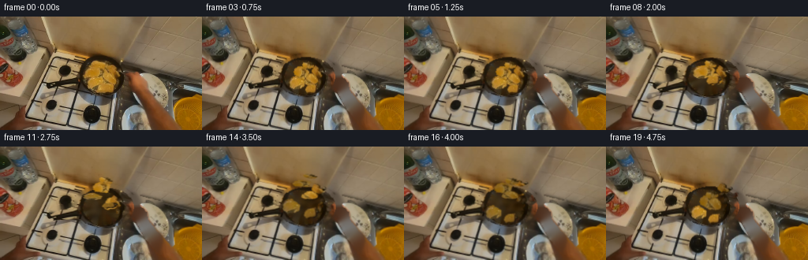
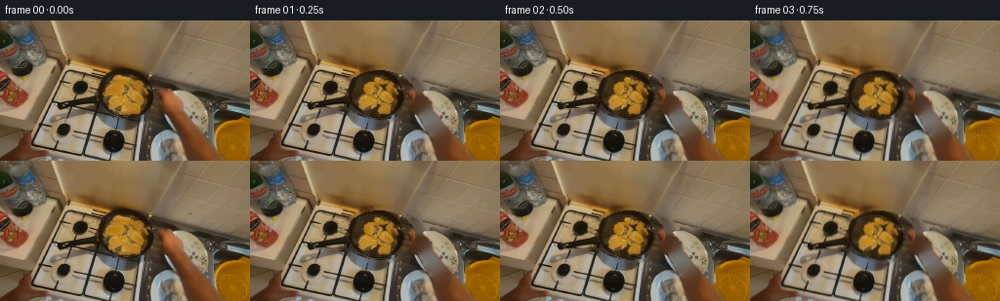

CODING AGENTS AS PIXEL WORLD MODELS
traex/DeepSeek-V4.1-Flash · common50_0028
点击播放 · 原生 RGB 像素
此结果可播放，但该运行尚未通过最终提交审核。页面展示不代表评测通过。
逐轮保存的候选
回放视频、检查图与代码变化。
每份候选均可单独播放。实际图片检查记录在下方工具轨迹中。
候选 01播放与检查图
点击播放 · 原生 RGB 像素


展开代码变化
--- 上一保存版本
+++ 本次保存版本
@@ -0,0 +1,307 @@
+from pathlib import Path
+import math
+
+import cv2
+import numpy as np
+from PIL import Image
+
+import artifact_io
+
+
+ROOT = Path(__file__).resolve().parent
+WIDTH, HEIGHT, N_FRAMES = 256, 144, 20
+
+
+def polygon_mask(points):
+ mask = np.zeros((HEIGHT, WIDTH), np.uint8)
+ cv2.fillPoly(mask, [np.asarray(points, np.int32)], 255)
+ return mask
+
+
+def ellipse_mask(center, axes, angle=0):
+ mask = np.zeros((HEIGHT, WIDTH), np.uint8)
+ cv2.ellipse(mask, center, axes, angle, 0, 360, 255, -1)
+ return mask
+
+
+def feather(mask, radius=0.7):
+ return cv2.GaussianBlur(mask, (0, 0), radius)
+
+
+def alpha_composite(base, layer, alpha):
+ a = alpha.astype(np.float32) / 255.0
+ if a.ndim == 2:
+ a = a[:, :, None]
+ return np.clip(layer.astype(np.float32) * a + base.astype(np.float32) * (1.0 - a), 0, 255).astype(np.uint8)
+
+
+def warp_rgba(rgba, matrix, size=(WIDTH, HEIGHT), border=cv2.BORDER_CONSTANT):
+ return cv2.warpAffine(
+ rgba,
+ matrix,
+ size,
+ flags=cv2.INTER_CUBIC,
+ borderMode=border,
+ borderValue=(0, 0, 0, 0),
+ )
+
+
+def make_pan_base(image):
+ pan = ellipse_mask((132, 76), (36, 25))
+ handle = polygon_mask([[95, 72], [72, 77], [63, 81], [66, 88], [99, 88]])
+ pan = cv2.bitwise_or(pan, handle)
+
+ hsv = cv2.cvtColor(image, cv2.COLOR_BGR2HSV)
+ hue, sat, val = cv2.split(hsv)
+ yy, xx = np.ogrid[:HEIGHT, :WIDTH]
+ inner = (((xx - 132) / 34.0) ** 2 + ((yy - 76) / 23.0) ** 2) < 1.0
+ food = inner & (sat > 55) & (val > 72) & (hue < 32) & ~((xx > 159) & (yy < 64))
+ food = cv2.morphologyEx((food.astype(np.uint8) * 255), cv2.MORPH_CLOSE, np.ones((3, 3), np.uint8))
+
+ clean = image.copy()
+ clean[food > 0] = cv2.inpaint(clean, food, 3, cv2.INPAINT_TELEA)[food > 0]
+ clean = cv2.inpaint(clean, food, 2, cv2.INPAINT_TELEA)
+ # A little horizontal texture in the in-painted center keeps the empty pan
+ # from becoming a flat patch when the food leaves it.
+ center = ((xx > 103) & (xx < 159) & (yy > 55) & (yy < 95)).astype(np.float32)
+ center = cv2.GaussianBlur(center, (0, 0), 4)[:, :, None]
+ stripe = np.sin(xx * 0.43 + yy * 0.17) * 2.2
+ clean = np.clip(clean.astype(np.float32) + center * stripe[:, :, None], 0, 255).astype(np.uint8)
+
+ rgba = np.dstack([clean, pan])
+ return rgba, food
+
+
+def make_food_pieces(image, food_mask):
+ # The visible cutlets are represented by overlapping low-resolution
+ # ellipses. Voronoi assignment keeps their source pixels from duplicating.
+ specs = [
+ (119, 82, 11, 8, -12),
+ (126, 70, 11, 8, 18),
+ (137, 78, 10, 7, -18),
+ (146, 67, 11, 7, 12),
+ (153, 78, 11, 8, 8),
+ (139, 91, 9, 7, 5),
+ (134, 59, 8, 5, -8),
+ (154, 90, 9, 6, 12),
+ ]
+ centers = np.asarray([[s[0], s[1]] for s in specs], np.float32)
+ ys, xs = np.mgrid[:HEIGHT, :WIDTH]
+ points = np.stack([xs, ys], axis=-1).astype(np.float32)
+ distances = ((points[:, :, None, :] - centers[None, None, :, :]) ** 2).sum(axis=-1)
+ owner = distances.argmin(axis=2)
+
+ pieces = []
+ for i, (cx, cy, rx, ry, angle) in enumerate(specs):
+ piece_ellipse = ellipse_mask((cx, cy), (rx, ry), angle) > 0
+ mask = piece_ellipse & (owner == i) & (food_mask > 0)
+ # Fill small holes and soften only the perimeter.
+ mask = cv2.morphologyEx(mask.astype(np.uint8), cv2.MORPH_CLOSE, np.ones((3, 3), np.uint8))
+ mask = cv2.morphologyEx(mask, cv2.MORPH_OPEN, np.ones((2, 2), np.uint8))
+ alpha = feather(mask * 255, 0.55)
+ rgba = np.dstack([image, alpha])
+ pieces.append(
+ {
+ "rgba": rgba,
+ "center": np.array([cx, cy], np.float32),
+ "phase": i * 0.73,
+ "delay": 0.15 + 0.10 * (i % 5),
+ "drift_x": [-7, 3, -2, 5, 2, -4, 1, 4][i],
+ "lift": [20, 24, 18, 22, 19, 17, 23, 18][i],
+ "spin": [-22, 18, -16, 14, -20, 24, -12, 16][i],
+ }
+ )
+ return pieces
+
+
+def make_hand_layer(image):
+ hand_polygon = polygon_mask(
+ [
+ [163, 76],
+ [168, 74],
+ [171, 70],
+ [176, 62],
+ [183, 57],
+ [191, 56],
+ [198, 59],
+ [202, 68],
+ [206, 78],
+ [211, 89],
+ [217, 101],
+ [221, 113],
+ [220, 124],
+ [213, 131],
+ [202, 133],
+ [191, 127],
+ [185, 117],
+ [178, 107],
+ [173, 98],
+ [169, 90],
+ [166, 83],
+ ]
+ )
+ hsv = cv2.cvtColor(image, cv2.COLOR_BGR2HSV)
+ hue, sat, val = cv2.split(hsv)
+ glove = ((sat < 112) & (val > 93) & (hand_polygon > 0)).astype(np.uint8) * 255
+ glove = cv2.morphologyEx(glove, cv2.MORPH_CLOSE, np.ones((3, 3), np.uint8))
+ glove = cv2.dilate(glove, np.ones((2, 2), np.uint8), iterations=1)
+ glove = cv2.bitwise_and(glove, hand_polygon)
+ glove = cv2.GaussianBlur(glove, (0, 0), 0.45)
+ return np.dstack([image, glove])
+
+
+def pan_transform(pan, t):
+ # Anticipation, toss, catch, and settle around the hand's grip point.
+ angle_keys = [0.0, 0.8, 1.7, 3.8, 5.8, 4.8, 2.4, 0.8, -0.7, -0.2, 0.0]
+ x_keys = [0.0, 0.2, -0.2, -0.5, -0.4, 0.0, 0.2, 0.0, -0.1, 0.0, 0.0]
+ y_keys = [0.0, -0.4, -1.0, -2.0, -2.5, -1.4, -0.2, 0.5, 0.3, 0.1, 0.0]
+ u = np.linspace(0.0, 1.0, len(angle_keys))
+ angle = float(np.interp(t, u, angle_keys))
+ dx = float(np.interp(t, u, x_keys))
+ dy = float(np.interp(t, u, y_keys))
+ pivot = np.array([168.0, 78.0], np.float32)
+ m = cv2.getRotationMatrix2D(tuple(pivot), angle, 1.0)
+ m[:, 2] += np.array([dx, dy], np.float32)
+ return m, angle, np.array([dx, dy], np.float32)
+
+
+def piece_state(piece, t):
+ # Each cutlet starts at a slightly different time and makes one short arc.
+ start = 0.16 + piece["delay"]
+ duration = 0.55 + 0.035 * (int(piece["phase"] * 10) % 4)
+ p = (t - start) / duration
+ if p <= 0.0:
+ return np.zeros(2, np.float32), 0.0, 1.0, 1.0, 0.0
+ if p >= 1.0:
+ settle = max(0.0, min(1.0, (p - 1.0) * 2.0))
+ dx = piece["drift_x"] * 0.38
+ dy = 0.4 * math.sin(settle * math.pi)
+ return np.array([dx, dy], np.float32), piece["spin"] * 0.15, 1.0, 1.0, 0.0
+
+ arc = math.sin(math.pi * p)
+ hop = math.sin(math.pi * min(1.0, p * 1.12))
+ dx = piece["drift_x"] * p + 2.2 * math.sin(2.0 * math.pi * p + piece["phase"])
+ dy = -piece["lift"] * hop
+ scale = 1.0 + 0.22 * arc
+ flip = math.cos(math.pi * min(1.0, p * 1.08))
+ squash = 0.38 + 0.62 * abs(flip)
+ rot = piece["spin"] * arc + 9.0 * math.sin(math.pi * p + piece["phase"])
+ return np.array([dx, dy], np.float32), rot, scale, squash, flip
+
+
+def render_piece(piece, t):
+ offset, angle, scale, squash, flip = piece_state(piece, t)
+ center = piece["center"]
+ m = cv2.getRotationMatrix2D(tuple(center), angle, scale)
+ # Apply a vertical squash for the airborne tumble.
+ squash_matrix = np.array([[1.0, 0.0, center[0] * (1.0 - 1.0)], [0.0, squash, center[1] * (1.0 - squash)]], np.float32)
+ m = squash_matrix @ np.vstack([m, [0.0, 0.0, 1.0]])
+ m = m[:2]
+ m[:, 2] += offset
+ out = warp_rgba(piece["rgba"], m)
+ if flip < 0.0:
+ rgb = out[:, :, :3].astype(np.float32)
+ # The underside is slightly darker and redder, as on a seared cutlet.
+ rgb[:, :, 0] *= 0.86
+ rgb[:, :, 1] *= 0.78
+ rgb[:, :, 2] *= 0.76
+ out[:, :, :3] = np.clip(rgb, 0, 255).astype(np.uint8)
+ return out
+
+
+def composite_rgba(base, rgba):
+ alpha = rgba[:, :, 3]
+ return alpha_composite(base, rgba[:, :, :3], alpha)
+
+
+def render():
+ source = np.array(Image.open(ROOT / "first_frame.png").convert("RGB"))
+ bgr = cv2.cvtColor(source, cv2.COLOR_RGB2BGR)
+
+ pan_rgba, food_mask = make_pan_base(bgr)
+ pieces = make_food_pieces(bgr, food_mask)
+ hand_rgba = make_hand_layer(bgr)
+
+ # Background is only used for the small gaps opened by the pan motion.
+ motion_mask = np.zeros((HEIGHT, WIDTH), np.uint8)
+ cv2.ellipse(motion_mask, (132, 76), (40, 29), 0, 0, 360, 255, -1)
+ cv2.fillPoly(motion_mask, [np.array([[95, 70], [70, 75], [60, 81], [66, 91], [100, 91]], np.int32)], 255)
+ cv2.fillPoly(
+ motion_mask,
+ [
+ np.array(
+ [
+ [160, 76],
+ [170, 56],
+ [198, 53],
+ [207, 75],
+ [225, 108],
+ [224, 132],
+ [201, 137],
+ [184, 118],
+ [169, 91],
+ ],
+ np.int32,
+ )
+ ],
+ 255,
+ )
+ background = cv2.inpaint(bgr, motion_mask, 5, cv2.INPAINT_TELEA)
+
+ frames = []
+ for index in range(N_FRAMES):
+ if index == 0:
+ frames.append(source.copy())
+ continue
+ t = index / (N_FRAMES - 1)
+
+ m_pan, _, _ = pan_transform(pan_rgba, t)
+ pan_frame = warp_rgba(pan_rgba, m_pan)
+ canvas = composite_rgba(background, pan_frame)
+
+ # Soft contact shadows on the pan keep the airborne pieces grounded.
+ for piece in pieces:
+ offset, _, scale, _, flip = piece_state(piece, t)
+ air = max(0.0, -offset[1] / max(piece["lift"], 1.0))
+ if air > 0.05:
+ cx = int(round(piece["center"][0] + offset[0] * 0.55))
+ cy = int(round(piece["center"][1] + 3.0 + air * 4.0))
+ shadow = np.zeros((HEIGHT, WIDTH), np.float32)
+ cv2.ellipse(
+ shadow,
+ (cx, cy),
+ (max(2, int(7 * scale)), max(1, int(3 * scale))),
+ 0,
+ 0,
+ 360,
+ (float(air * 0.25),),
+ -1,
+ )
+ shadow = cv2.GaussianBlur(shadow, (0, 0), 2.2)
+ canvas = np.clip(canvas.astype(np.float32) * (1.0 - shadow[:, :, None]), 0, 255).astype(np.uint8)
+
+ # Food above the pan.
+ for piece in pieces:
+ canvas = composite_rgba(canvas, render_piece(piece, t))
+
+ # Hand and wrist stay registered to the pan's right-hand grip.
+ canvas = composite_rgba(canvas, hand_rgba)
+
+ # Very subtle handheld camera motion after the action begins.
+ if index >= 3:
+ phase = (index - 3) / 16.0
+ warp = np.array(
+ [[1.0, 0.0025 * math.sin(phase * 2.1), 0.45 * math.sin(phase * 3.3)],
+ [-0.0018 * math.sin(phase * 2.1), 1.0, 0.30 * math.cos(phase * 2.7)]],
+ np.float32,
+ )
+ canvas = cv2.warpAffine(canvas, warp, (WIDTH, HEIGHT), flags=cv2.INTER_LINEAR, borderMode=cv2.BORDER_REFLECT)
+
+ frames.append(cv2.cvtColor(np.clip(canvas, 0, 255).astype(np.uint8), cv2.COLOR_BGR2RGB))
+
+ frames[0] = source.copy()
+ return np.asarray(frames, dtype=np.uint8)
+
+
+if __name__ == "__main__":
+ artifact_io.save(render(), ROOT)
可观测工具轨迹
实际执行的命令与返回图片。
命令 1exit 0
/bin/bash -c "pwd && rg --files -g 'prompt.txt' -g 'GENERATION_RULES.md' -g '"'!**/.git/**'"'"
命令 2exit 0
/bin/bash -c 'ls -la'
命令 3exit 0
/bin/bash -c 'cat prompt.txt'
命令 4exit 0
/bin/bash -c 'cat GENERATION_RULES.md'
命令 5exit 0
/bin/bash -c 'cat task_spec.json'
命令 6exit 0
/bin/bash -c "sed -n '1,240p' artifact_io.py"
命令 7exit 127
/bin/bash -c 'identify first_frame.png'
命令 8exit 0
/bin/bash -c "which ffmpeg; which convert; python - <<'PY'
import PIL, numpy
print('PIL', PIL.__version__, 'numpy', numpy.__version__)
PY"命令 9exit 0
/bin/bash -c "python - <<'PY'
from PIL import Image
im=Image.open('first_frame.png')
im.crop((70,35,210,140)).resize((700,525)).save('.tmp/pan_crop.png')
im.crop((145,55,256,144)).resize((555,445)).save('.tmp/arm_crop.png')
PY"命令 10exit 0
/bin/bash -c "python - <<'PY'
try:
import cv2; print('cv2', cv2.__version__)
except Exception as e: print('no cv2', e)
try:
import scipy; print('scipy', scipy.__version__)
except Exception as e: print('no scipy', e)
PY"命令 11exit 0
/bin/bash -c "python - <<'PY'
from PIL import Image, ImageDraw, ImageFont
im=Image.open('first_frame.png').resize((1024,576))
d=ImageDraw.Draw(im)
for x in range(0,257,20):
d.line((x*4,0,x*4,576),fill=(255,0,0),width=1)
d.text((x*4+2,2),str(x),fill=(255,255,0))
for y in range(0,145,20):
d.line((0,y*4,1024,y*4),fill=(0,255,255),width=1)
d.text((2,y*4+2),str(y),fill=(255,255,0))
im.save('.tmp/grid.png')
PY"命令 12exit 0
/bin/bash -c "python - <<'PY'
import cv2, numpy as np
im=cv2.imread('first_frame.png')
hsv=cv2.cvtColor(im,cv2.COLOR_BGR2HSV)
# tan food hue around 10-35, saturation >40, value >70, inside pan ellipse
h,s,v=cv2.split(hsv)
Y,X=np.ogrid[:144,:256]
mask=(((X-132)/34)**2+((Y-76)/25)**2<1) & (s>45) & (v>65) & (h<35)
m=(mask.astype(np.uint8)*255)
n, lab, stats, cent=cv2.connectedComponentsWithStats(m)
out=np.zeros_like(im); out[mask]=im[mask]
cv2.imwrite('.tmp/food_mask.png',m)
for i in range(1,n):
if stats[i,4]>15: print(i, stats[i].tolist(), cent[i].tolist())
PY"命令 13exit 0
/bin/bash -c "python - <<'PY'
import cv2, numpy as np
im=cv2.imread('first_frame.png')
h,w=im.shape[:2]
mask=np.zeros((h,w),np.uint8)
cv2.ellipse(mask,(132,76),(35,25),0,0,360,255,-1)
# handle from pan left rim to far left
pts=np.array([[95,72],[70,77],[63,81],[66,88],[98,87]],np.int32)
cv2.fillPoly(mask,[pts],255)
# exclude hand area on right beyond rim
mask[:,164:]=0
inp=cv2.inpaint(im,mask,4,cv2.INPAINT_TELEA)
cv2.imwrite('.tmp/pan_mask.png',mask)
cv2.imwrite('.tmp/inpaint.png',inp)
# feather blended example
PY"命令 14exit 0
/bin/bash -c "python - <<'PY'
import cv2, numpy as np
im=cv2.imread('first_frame.png'); hsv=cv2.cvtColor(im,cv2.COLOR_BGR2HSV)
h,s,v=cv2.split(hsv)
Y,X=np.ogrid[:144,:256]
food=(((X-132)/33)**2+((Y-76)/23)**2<1)&(s>48)&(v>68)&(h<34)
# remove likely pan highlights? output mask
m=(food.astype(np.uint8)*255)
cv2.imwrite('.tmp/foodmask2.png',m)
PY"命令 15exit 0
/bin/bash -c "python - <<'PY'
import cv2, numpy as np
im=cv2.imread('first_frame.png'); hsv=cv2.cvtColor(im,cv2.COLOR_BGR2HSV)
h,s,v=cv2.split(hsv)
Y,X=np.ogrid[:144,:256]
region=(((X-132)/34)**2+((Y-76)/24)**2<1)
# limit right side to avoid skin/hand: pixels around x>160 y<60 skin light hue maybe. food warm is lower saturation than hand? print sample
for p in [(132,76),(151,63),(160,77),(104,70),(157,53),(166,63),(172,72),(120,54),(136,95)]:
x,y=p; print(p, im[y,x][::-1], hsv[y,x])
# food mask saturation 55-170 to avoid low saturation highlights and maybe pan? hue <30
food=region&(s>55)&(v>75)&(h<30)&~((X>159)&(Y<62))
m=(food.astype(np.uint8)*255)
cv2.imwrite('.tmp/foodmask3.png',m)
PY"命令 16exit 0
/bin/bash -c "python - <<'PY'
import cv2, numpy as np
im=cv2.imread('first_frame.png'); hsv=cv2.cvtColor(im,cv2.COLOR_BGR2HSV)
h,s,v=cv2.split(hsv)
Y,X=np.ogrid[:144,:256]
region=(((X-132)/34)**2+((Y-76)/24)**2<1)
food=region&(s>55)&(v>75)&(h<30)&~((X>159)&(Y<62))
m=(food.astype(np.uint8)*255)
# inspect original with mask overlay boundaries
contours,_=cv2.findContours(m,cv2.RETR_EXTERNAL,cv2.CHAIN_APPROX_SIMPLE)
out=im.copy(); cv2.drawContours(out,contours,-1,(255,0,255),1)
cv2.imwrite('.tmp/foodmask3_overlay.png',out)
PY"命令 17exit 0
/bin/bash -c "python - <<'PY'
import cv2, numpy as np
im=cv2.imread('first_frame.png'); hsv=cv2.cvtColor(im,cv2.COLOR_BGR2HSV)
h,s,v=cv2.split(hsv)
Y,X=np.ogrid[:144,:256]
region=(((X-132)/34)**2+((Y-76)/24)**2<1)
food=region&(s>55)&(v>75)&(h<30)&~((X>159)&(Y<62))
# build manually split pieces from estimated centers, ellipse masks
spec=[(126,75,10,7,0),(140,69,11,7,-25),(150,80,11,7,25),(134,88,9,6,10),(119,68,8,6,-20),(147,69,9,6,20),(133,62,8,5,10),(127,85,7,5,15)]
for i,(x,y,a,b,ang) in enumerate(spec):
m=np.zeros((144,256),np.uint8); cv2.ellipse(m,(x,y),(a,b),ang,0,360,255,-1)
m=(m>0)&food
cv2.imwrite(f'.tmp/piece{i}.png', (m.astype(np.uint8)*255))
PY"命令 18exit 0
/bin/bash -c "python - <<'PY'
import cv2,numpy as np
im=cv2.imread('first_frame.png')
pan=np.zeros((144,256),np.uint8)
cv2.ellipse(pan,(132,76),(36,25),0,0,360,255,-1)
cv2.fillPoly(pan,[np.array([[95,72],[72,77],[63,81],[66,87],[99,88]],np.int32)],255)
# hand mask region using polygon points, then show
hand=np.zeros((144,256),np.uint8)
pts=np.array([[164,77],[170,76],[173,73],[178,65],[184,60],[191,56],[198,58],[202,67],[206,77],[210,88],[216,100],[220,113],[219,123],[212,129],[203,130],[195,125],[189,117],[182,107],[176,98],[171,91],[168,84]],np.int32)
cv2.fillPoly(hand,[pts],255)
cv2.imwrite('.tmp/handmask.png',hand)
PY"命令 19exit 0
/bin/bash -c "python - <<'PY'
import cv2,numpy as np
im=cv2.imread('first_frame.png')
hand=np.zeros((144,256),np.uint8)
pts=np.array([[164,77],[170,76],[173,73],[178,65],[184,60],[191,56],[198,58],[202,67],[206,77],[210,88],[216,100],[220,113],[219,123],[212,129],[203,130],[195,125],[189,117],[182,107],[176,98],[171,91],[168,84]],np.int32)
cv2.fillPoly(hand,[pts],255)
out=im.copy(); out[hand>0]=(0,0,255)
cv2.imwrite('.tmp/hand_overlay.png',out)
PY"命令 20exit 0
/bin/bash -c "python - <<'PY'
import cv2,numpy as np
im=cv2.imread('first_frame.png')
hand=np.zeros((144,256),np.uint8)
pts=np.array([[163,76],[168,74],[171,70],[176,62],[183,57],[191,56],[198,59],[202,68],[206,78],[211,89],[217,101],[221,113],[220,124],[213,131],[202,133],[191,127],[185,117],[178,107],[173,98],[169,90],[166,83]],np.int32)
cv2.fillPoly(hand,[pts],255)
out=im.copy(); out[hand>0]=(0,0,255)
cv2.imwrite('.tmp/hand_overlay2.png',out)
PY"命令 21exit 0
/bin/bash -c "python - <<'PY'
from PIL import Image
Image.open('.tmp/inpaint.png').crop((55,35,175,110)).resize((720,450)).save('.tmp/inpaint_crop.png')
PY"命令 22exit 0
/bin/bash -c "python - <<'PY'
from PIL import Image
im=Image.open('first_frame.png')
im.crop((90,40,180,110)).resize((720,560)).save('.tmp/pan_zoom.png')
PY"命令 23exit 0
/bin/bash -c "python - <<'PY'
import cv2,numpy as np
im=cv2.imread('first_frame.png')
# Save candidate pan layer with alpha via mask incl body/handle and most hand? first body/handle no hand
mask=np.zeros((144,256),np.uint8)
cv2.ellipse(mask,(132,76),(36,25),0,0,360,255,-1)
cv2.fillPoly(mask,[np.array([[95,72],[72,77],[63,81],[66,87],[99,88]],np.int32)],255)
# output crop enlarged with checker
bgra=np.dstack([im,mask])
cv2.imwrite('.tmp/pan_layer.png',bgra)
PY"命令 24exit 0
/bin/bash -c "python - <<'PY'
import cv2,numpy as np
im=cv2.imread('first_frame.png')
# find bright glove pixels in hand polygon
hsv=cv2.cvtColor(im,cv2.COLOR_BGR2HSV)
hand=np.zeros((144,256),np.uint8)
pts=np.array([[163,76],[168,74],[171,70],[176,62],[183,57],[191,56],[198,59],[202,68],[206,78],[211,89],[217,101],[221,113],[220,124],[213,131],[202,133],[191,127],[185,117],[178,107],[173,98],[169,90],[166,83]],np.int32)
cv2.fillPoly(hand,[pts],255)
# glove bright low sat high v
g=((hsv[:,:,1]<95)&(hsv[:,:,2]>120)&(hand>0)).astype(np.uint8)*255
n,lab,stats,cent=cv2.connectedComponentsWithStats(g)
for i in range(1,n):
if stats[i,4]>10: print(i,stats[i].tolist(),cent[i])
cv2.imwrite('.tmp/glove.png',g)
PY"命令 25exit 0
/bin/bash -c "python - <<'PY'
import cv2,numpy as np
im=cv2.imread('first_frame.png')
hsv=cv2.cvtColor(im,cv2.COLOR_BGR2HSV)
h,s,v=cv2.split(hsv)
hand=np.zeros((144,256),np.uint8)
pts=np.array([[163,76],[168,74],[171,70],[176,62],[183,57],[191,56],[198,59],[202,68],[206,78],[211,89],[217,101],[221,113],[220,124],[213,131],[202,133],[191,127],[185,117],[178,107],[173,98],[169,90],[166,83]],np.int32)
cv2.fillPoly(hand,[pts],255)
g=(((s<105)&(v>100))|((s<80)&(v>80))).astype(np.uint8)*255
# blob largest within hand, use morphology and then flood component
g[hand==0]=0
g=cv2.morphologyEx(g,cv2.MORPH_CLOSE,np.ones((3,3),np.uint8))
n,lab,stats,cent=cv2.connectedComponentsWithStats(g)
for i in range(1,n):
if stats[i,4]>20: print(i,stats[i].tolist(),cent[i])
cv2.imwrite('.tmp/glove2.png',g)
PY"命令 26exit 0
/bin/bash -c "python - <<'PY'
import cv2,numpy as np
im=cv2.imread('first_frame.png')
for x,y in [(190,60),(200,90),(184,62),(205,80),(212,110),(180,78),(167,78),(175,70)]: print((x,y),im[y,x][::-1])
# inspect patch zoom with grid pixels
crop=im[50:135,160:240]
cv2.imwrite('.tmp/hand_zoom.png',cv2.resize(crop,None,fx=8,fy=8,interpolation=cv2.INTER_NEAREST))
PY"命令 27exit 1
/bin/bash -c 'python generate.py'
命令 28exit 0
/bin/bash -c 'python generate.py'
命令 29exit 0
/bin/bash -c "python - <<'PY'
from PIL import Image
for i in [0,1,3,5,7,9,12,15,18,19]:
im=Image.open(f'frames/{i:02d}.png').crop((55,35,230,140)).resize((1050,630))
im.save(f'.tmp/crop_{i:02d}.png')
PY"命令 30exit 0
/bin/bash -c "python - <<'PY'
import cv2,numpy as np
im=cv2.imread('first_frame.png')
# crop pan at 12x with grid every 5 px in local coords to identify exact food extents
crop=im[50:105,100:175]
big=cv2.resize(crop,None,fx=12,fy=12,interpolation=cv2.INTER_NEAREST)
for x in range(0,75,5):
cv2.line(big,(x*12,0),(x*12,big.shape[0]),(255,0,255),1); cv2.putText(big,str(100+x),(x*12+1,12),cv2.FONT_HERSHEY_SIMPLEX,.3,(255,255,0),1)
for y in range(0,55,5):
cv2.line(big,(0,y*12),(big.shape[1],y*12),(255,0,255),1); cv2.putText(big,str(50+y),(1,y*12+11),cv2.FONT_HERSHEY_SIMPLEX,.3,(255,255,0),1)
cv2.imwrite('.tmp/food_grid.png',big)
PY"命令 31exit 0
/bin/bash -c "python - <<'PY'
from PIL import Image
im=Image.open('first_frame.png')
im.crop((100,50,175,105)).resize((1200,880)).save('.tmp/food_big.png')
PY"命令 32exit 0
/bin/bash -c "python - <<'PY'
import cv2, numpy as np
for i in [0,5,7,9,12,15,19]:
im=cv2.imread(f'frames/{i:02d}.png')
# compare pixels to source around pan background, print MAE in mask
src=cv2.imread('first_frame.png')
m=np.zeros((144,256),np.uint8); cv2.rectangle(m,(100,45),(175,105),255,-1)
d=np.abs(im.astype(int)-src.astype(int)).mean(2)
print(i, d[m>0].mean(), np.percentile(d[m>0],[50,90,99]))
PY"命令 33exit 0
/bin/bash -c "python - <<'PY'
import cv2,numpy as np
from generate import make_pan_base, make_food_pieces, make_hand_layer, render_piece, composite_rgba, pan_transform
src=cv2.imread('first_frame.png')
pan,food=make_pan_base(src); pieces=make_food_pieces(src,food); hand=make_hand_layer(src)
for i in [5,7,9,12,15]:
base=np.zeros_like(src); base[:]=src
# canvas bg in this test source; composite pan and pieces
from generate import warp_rgba
m,_,_=pan_transform(pan,i/19)
canvas=composite_rgba(src,warp_rgba(pan,m))
for p in pieces: canvas=composite_rgba(canvas,render_piece(p,i/19))
canvas=composite_rgba(canvas,hand)
cv2.imwrite(f'.tmp/layer_{i:02d}.png',canvas)
cv2.imwrite('.tmp/pan_only.png',src[:,:,:3])
# masks
cv2.imwrite('.tmp/foodmask_current.png',food)
PY"命令 34exit 0
/bin/bash -c "python - <<'PY'
import cv2,numpy as np
im=cv2.imread('.tmp/layer_09.png')
# crop full 4x
c=im[40:110,100:180]
cv2.imwrite('.tmp/layer09_crop.png',cv2.resize(c,None,fx=8,fy=8,interpolation=cv2.INTER_NEAREST))
PY"命令 35exit 0
/bin/bash -c "sed -n '1,360p' generate.py"
命令 36exit 0
/bin/bash -c "python - <<'PY'
import cv2,numpy as np
im=cv2.imread('first_frame.png'); hsv=cv2.cvtColor(im,cv2.COLOR_BGR2HSV)
h,s,v=cv2.split(hsv); yy,xx=np.ogrid[:144,:256]
region=(((xx-132)/32)**2+((yy-76)/21)**2<1)
food=region&(s>55)&(v>18)&(h<38)&~((xx>160)&(yy<66))
m=(food.astype(np.uint8)*255)
m=cv2.morphologyEx(m,cv2.MORPH_CLOSE,np.ones((5,5),np.uint8))
m=cv2.morphologyEx(m,cv2.MORPH_OPEN,np.ones((2,2),np.uint8))
# fill contours if small
cv2.imwrite('.tmp/food_broad.png',m)
out=im.copy(); out[m>0]=(0,0,255); cv2.imwrite('.tmp/food_broad_overlay.png',out)
PY"命令 37exit 0
/bin/bash -c "python - <<'PY'
import cv2,numpy as np
im=cv2.imread('first_frame.png'); hsv=cv2.cvtColor(im,cv2.COLOR_BGR2HSV)
h,s,v=cv2.split(hsv); yy,xx=np.ogrid[:144,:256]
region=(((xx-132)/33)**2+((yy-76)/23)**2<1)
# Food fills warm middle values; black sear remains part of silhouettes.
food=region&(s>48)&(v>35)&(h<35)&~((xx>159)&(yy<63))
# exclude dark pan rim by only letting low-value connected to warm core via close
m=(food.astype(np.uint8)*255)
m=cv2.morphologyEx(m,cv2.MORPH_CLOSE,np.ones((3,3),np.uint8))
cv2.imwrite('.tmp/food_broad2.png',m)
out=im.copy(); out[m>0]=(0,0,255); cv2.imwrite('.tmp/food_broad2_overlay.png',out)
PY"命令 38exit 0
/bin/bash -c "python - <<'PY'
import cv2,numpy as np
im=cv2.imread('first_frame.png')
specs=[(116,81,12,8,-15),(126,70,11,8,15),(137,77,10,7,-10),(151,77,12,8,10),(144,62,9,5,5),(136,90,9,6,0),(153,89,8,5,10)]
cent=np.array([[x,y] for x,y,*_ in specs],np.float32)
ys,xs=np.mgrid[:144,:256]; pts=np.stack([xs,ys],-1).astype(np.float32)
owner=((pts[:,:,None,:]-cent[None,None])**2).sum(-1).argmin(2)
union=np.zeros((144,256),np.uint8); out=im.copy(); rng=np.random.default_rng(2)
for i,(x,y,a,b,ang) in enumerate(specs):
m=np.zeros((144,256),np.uint8); cv2.ellipse(m,(x,y),(a,b),ang,0,360,255,-1)
m=((m>0)&(owner==i)).astype(np.uint8)*255
union=np.maximum(union,m)
color=tuple(int(c) for c in rng.integers(80,255,3))
out[m>0]=color
cv2.imwrite('.tmp/spec_overlay.png',out)
cv2.imwrite('.tmp/spec_union.png',union)
PY"命令 39exit 0
/bin/bash -c "python - <<'PY'
import cv2,numpy as np
im=cv2.imread('first_frame.png')
specs=[(116,81,12,8,-15),(126,70,11,8,15),(137,77,10,7,-10),(151,77,12,8,10),(144,62,9,5,5),(136,90,9,6,0),(153,89,8,5,10)]
cent=np.array([[x,y] for x,y,*_ in specs],np.float32)
ys,xs=np.mgrid[:144,:256]; pts=np.stack([xs,ys],-1).astype(np.float32)
owner=((pts[:,:,None,:]-cent[None,None])**2).sum(-1).argmin(2)
union=np.zeros((144,256),np.uint8)
for i,(x,y,a,b,ang) in enumerate(specs):
m=np.zeros((144,256),np.uint8); cv2.ellipse(m,(x,y),(a,b),ang,0,360,255,-1)
m=((m>0)&(owner==i)).astype(np.uint8)*255; union=np.maximum(union,m)
# inpaint exact union
inp=cv2.inpaint(im,union,3,cv2.INPAINT_TELEA)
cv2.imwrite('.tmp/inpaint_union.png',inp)
PY"命令 40exit 0
/bin/bash -c "python - <<'PY'
import cv2,numpy as np
im=cv2.imread('first_frame.png'); hsv=cv2.cvtColor(im,cv2.COLOR_BGR2HSV)
# fit 7 spec pieces, inspect each alpha count
specs=[(116,81,12,8,-15),(126,70,11,8,15),(137,77,10,7,-10),(151,77,12,8,10),(144,62,9,5,5),(136,90,9,6,0),(153,89,8,5,10)]
cent=np.array([[x,y] for x,y,*_ in specs],np.float32)
ys,xs=np.mgrid[:144,:256]; pts=np.stack([xs,ys],-1).astype(np.float32)
owner=((pts[:,:,None,:]-cent[None,None])**2).sum(-1).argmin(2)
h,s,v=cv2.split(hsv)
for i,(x,y,a,b,ang) in enumerate(specs):
m=np.zeros((144,256),np.uint8); cv2.ellipse(m,(x,y),(a,b),ang,0,360,255,-1)
m=(m>0)&(owner==i)
print(i,m.sum(), 'dark', (m&(v<55)).sum(), 'bright',(m&(v>170)).sum())
PY"命令 41exit 0
/bin/bash -c "python - <<'PY'
import cv2,numpy as np
im=cv2.imread('first_frame.png')
specs=[(116,81,12,8,-15),(126,70,11,8,15),(137,77,10,7,-10),(151,77,12,8,10),(144,62,9,5,5),(136,90,9,6,0),(153,89,8,5,10)]
cent=np.array([[x,y] for x,y,*_ in specs],np.float32)
ys,xs=np.mgrid[:144,:256]; pts=np.stack([xs,ys],-1).astype(np.float32)
owner=((pts[:,:,None,:]-cent[None,None])**2).sum(-1).argmin(2)
union=np.zeros((144,256),np.uint8)
for i,(x,y,a,b,ang) in enumerate(specs):
m=np.zeros((144,256),np.uint8); cv2.ellipse(m,(x,y),(a,b),ang,0,360,255,-1)
m=((m>0)&(owner==i)).astype(np.uint8)*255; union=np.maximum(union,m)
inp=cv2.inpaint(im,union,3,cv2.INPAINT_TELEA)
# fill with median warm dark color? preserve from neighboring pan
hsv=cv2.cvtColor(inp,cv2.COLOR_BGR2HSV)
# build broad food mask hue warm, sat >30, val > 30
m=(hsv[:,:,0]<35)&(hsv[:,:,1]>35)&(hsv[:,:,2]>25)
m=m.astype(np.uint8)*255
cv2.imwrite('.tmp/inpaint_union_foodmask.png',m)
cv2.imwrite('.tmp/inpaint_union_overlay.png',cv2.addWeighted(inp,0.65,im,0.35,0))
PY"命令 42exit 0
/bin/bash -c "python - <<'PY'
import cv2,numpy as np
from generate import make_pan_base,make_food_pieces
im=cv2.imread('first_frame.png'); pan,mask=make_pan_base(im); pieces=make_food_pieces(im,mask)
out=im.copy(); rng=np.random.default_rng(4)
for i,p in enumerate(pieces):
a=p['rgba'][:,:,3]>50
col=np.array([50+i*25, 230-i*20, 100+(i%3)*50],np.uint8)
out[a]=(out[a]*.25+col*.75).astype(np.uint8)
cv2.imwrite('.tmp/pieces_overlay.png',out)
# individual mask montage
ims=[]
for i,p in enumerate(pieces):
a=p['rgba'][:,:,3]; one=np.zeros_like(im); one[a>20]=im[a>20]
crop=one[50:100,105:165]
crop=cv2.resize(crop,(360,300),interpolation=cv2.INTER_NEAREST)
cv2.putText(crop,str(i),(8,30),cv2.FONT_HERSHEY_SIMPLEX,1,(0,255,0),2)
ims.append(crop)
cv2.imwrite('.tmp/pieces_montage.png',np.concatenate([np.concatenate(ims[:4],1),np.concatenate(ims[4:]+[np.zeros_like(ims[0])]*(4-len(ims[4:])),1)],0))
PY"保存候选 1 份；完成命令 42 次；可验证图片返回 0 张。原始 API 响应与完整日志保留在本地。